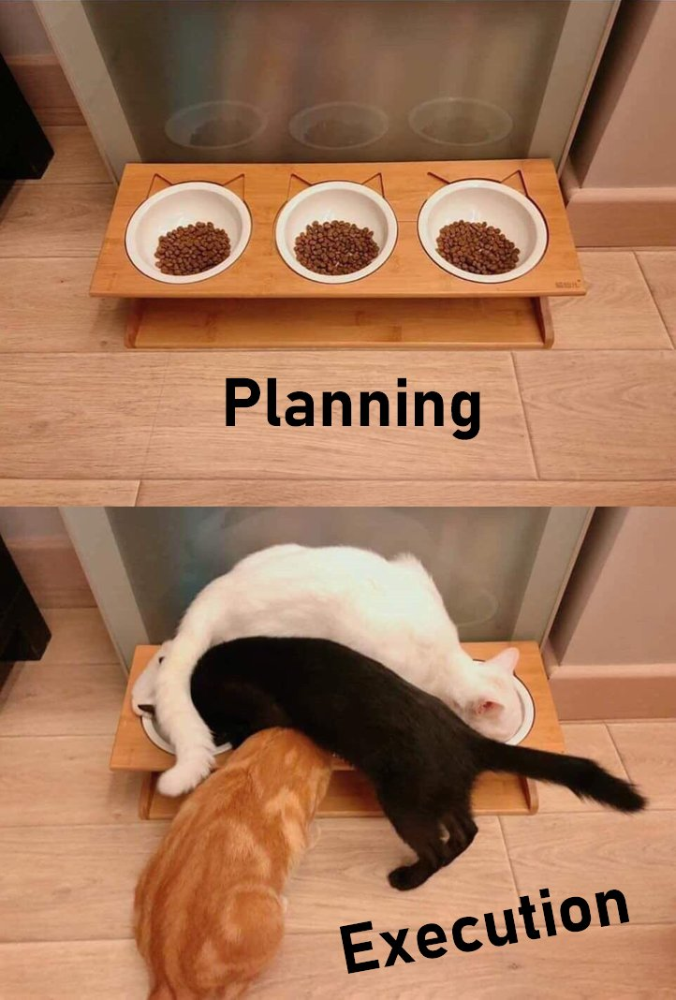

IPC and locking
Interprocess communication and how to not shoot yourself in the foot
CNRS
IMAG
Paul-Valéry Montpellier 3 University
Inter-Process Communication
Remainder on Process-level parallelization
Inter-process is easy…
- But if my algorithm is not “embarrassingly parallel”, what if we want to share data between processes ?
- let’s go for Shared Memory
Shared Memory Model
┌─────────────────────────────┐ ┌─────────────────────────────┐
│ │ │ │
│ ┌──────────┐ ┌──────────┐ │ │ ┌──────────┐ ┌──────────┐ │
│ │ │ │ │ │ │ │ │ │ │ │
│ │ CORE 1 │ │ CORE 2 │ │ │ │ CORE 3 │ │ CORE 4 │ │
│ │ │ │ │ │ │ │ │ │ │ │
│ └─┬──┬─────┘ └────┬─────┘ │ │ └┬─────────┘ └──────┬───┘ │
│ │ │ │ │ │ │ │ │
│ │ │ │ │ │ │ │ │
│ │ │ CPU 1 │ │ │ │ CPU 2 │ │
│ │ │ │ │ │ │ │ │
└───┼──┼──────────────┼───────┘ └──┼────────────────────┼─────┘
│ │ │ │ │
│ │ └────────────┐ │ │
│ │ │ │ │
│ └─────────────────────────┐ │ │ │
│ │ │ │ ┌─────────────────┘
└──────────────────────────┐ │ │ │ │
│ │ │ │ │
┌──────────────────────────────┼─┼─┼──┼──┼──────────────────────┐
│ │ │ │ │ │ │
│ ┌─────┐ ┌─────┐ ┌─────┐ ┌─▼─▼─▼──▼──▼─┐ │
│ │ │ │ │ │ │ │Shared Memory│ │
│ └─────┘ └─────┘ └─────┘ └─────────────┘ │
│ Main Memory │
└───────────────────────────────────────────────────────────────┘Aside : memory models
There are differents models
Shared FIFOs : Queues
An ubiquitous tool in multiprocessing (and distributed computing) is shared memory FIFO list, aka Queues.
Shared FIFOs : Queues, (2)
A FIFO is a :
- Linked list
- with FIFO (First In First Out) semantics, with
enqueue(x)etdequeue()function (orpush(x)/pop())

Shared FIFOs : Queues, (3)
In the context of multi-processing (or multi-threading) :
Shared Memory + FIFO list = Queue
Shared FIFOs : Queues, (4)
Queues are the basis of the consumer/producer model, which is widely used in concurrent and distributed applications.
When to use queues?
An algorithm with two computations A and B where :
- B depends on the result of A
- A is independent of B
A could be a producer for B, and B a consumer for A.
How to use queues?
┌───────────┐
│ │
│ Producer │
│ │ Process A
│ │
└─────┬─────┘
│
┌────┼───────────────────────────────────────────────────────────────────┐
│ │ Queue │
│ │ ┌─────┬─────┬─────┬─────┬─────┬─────┬─────┐ │
│ │ │ │ │ │ │ │ │ │ │
│ └───────►│ │ │ │ │ │ │ ├──────────┐ │
│ │ │ │ │ │ │ │ │ │ │
│ └─────┴─────┴─────┴─────┴─────┴─────┴─────┘ │ │
│ │ │
│ Shared Memory │ │
└──────────────────────────────────────────────────────────────────┼─────┘
│
▼
┌───────────┐
│ │
Process B │ Consumer │
│ │
│ │
└───────────┘Producer/consumer, Examples
- A finds primes in a list of number, B formats and prints them every 10 numbers found.
- A fetches a bunch of images on the web, B downloads them and saves them to disk.
- A takes the orders in the restaurant, B cooks them.

More on locking
The main gotcha
what if several processes want to write/read the same shared memory portions at the same time?
Enter the realm of the dreaded race condition

Simple example
Printing from several processes a string with 10 times the same char.
Output:
AAAAAAAAAACCCCCCCCCCBBBBBBBBBBDDDDDDDDDDEEEEEEEEEE
FFFFFFFFFFGGGGGGGGGG
IIIIIIIIII
HHHHHHHHHH
JJJJJJJJJJ
The answer : critical section
A critical section is :
- a multiprocessing (and also multithreading) primitive which decorates a portion of code.
- guaranteed to be run by only ONE process at a time.
┌─────────────┐
│ │
│ Normal │
│ Code │ Parallelized
│ │
└──────┬──────┘
│
┌──────▼──────┐
│ │
│ Critical │ Not parallelized
│ Section │
│ │
└──────┬──────┘
│
┌──────▼──────┐
│ │
│ Normal │ Parallelized
│ Code │
│ │
└─────────────┘Critical section workflow
A simple implementation in Python : Lock
from multiprocessing.pool import Pool
from multiprocessing import Lock
from itertools import repeat
lock = Lock()
def safe_repeat10Cap(c):
with lock:
# Beginning of critical section
print("".join(repeat(chr(c+65),10)))
# End of critical section
with Pool(8) as pool:
pool.map(safe_repeat10Cap, range(10))Output:
AAAAAAAAAA
BBBBBBBBBB
CCCCCCCCCC
DDDDDDDDDD
EEEEEEEEEE
FFFFFFFFFF
GGGGGGGGGG
HHHHHHHHHH
IIIIIIIIII
JJJJJJJJJJWhen to use locks ?
- Concurrent access to shared data structures
- Structural consistency not guaranteed.
Consistency problems with FIFO example I
Process A (resp. B) wants to push x (resp. y) on the list.
\Longrightarrow Consistency problem if they both create a new linked node to node 3.
Consistency problems with FIFO example 2
Process A and B both want to pop the list.
\Longrightarrow Consistency problem if they both pop the same node.
(No) Consistency problems with FIFO example 3
No problem there.
Warning
⚠ ⚠ As long the list is not empty ⚠ ⚠
Locking, refined
Beware of putting locks everywhere… Beware…
Deadlock example
Deadlock (serious) example
Process A acquires lock L1. Process B acquires lock L2. Process A tries to acquire lock L2, but it is already held by B. Process B tries to acquire lock L1, but it is already held by A. Both processes are blocked.
Avoiding Deadlocks
There is several ways to avoid deadlocks. One of them is the Dijkstra’s Resource Hiearchy Solution.
In the previous example, processes should try the lowest numbered locks first. Instead of B acquiring L2 first, it should tries to acquire L1 instead and L2 after.
This solution isn’t universal but is pretty usable in general case.
Conclusion
Diving (a little) deeper into parallelism, when computations are NOT independent of each other (no embarrasingly parallel approach), we need a way to decouple processing of data, while still keeping the dependancies intact.
\Longrightarrow Shared Memory and Queues to the rescue
With the concurrent use of ressources, there are two pitfalls to be aware of:
- Race Conditions, solution : locking
- Deadlocks, solution : careful and consistent ordering of locks.
References

IPC and lockingAdvanced Programming and Parallel Computing, Master 2 MIASHS